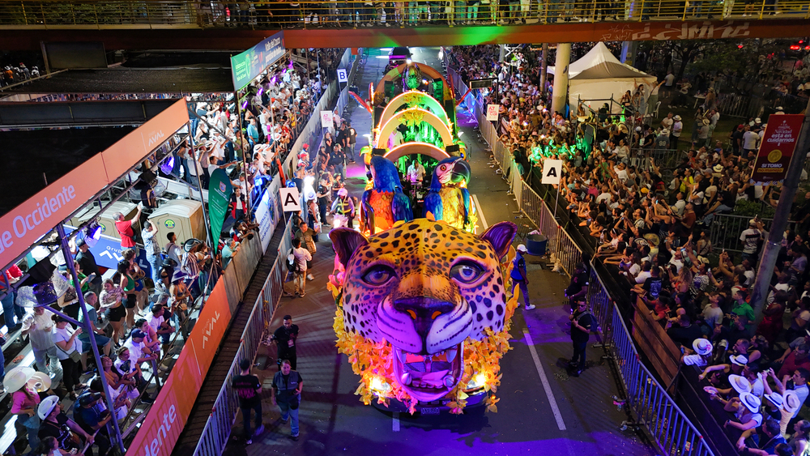

Fairs

Cali fair
The Cali Fair is one of Colombia's most iconic festivals, celebrated annually from December 25th to 30th, showcasing salsa culture, music, and local cuisine. The main event is the Salsódromo, where thousands of dancers from salsa schools parade in a spectacular show.
More information
Image taken from:

Cali fair 2025
The 68th edition of the Cali Fair will take place from December 25 to 30, 2025. This version, known as the Cali Fair 68, stands out for the return of its traditional events to Calle 25 and a strong focus on neighborhood culture.
More information
Image taken from: